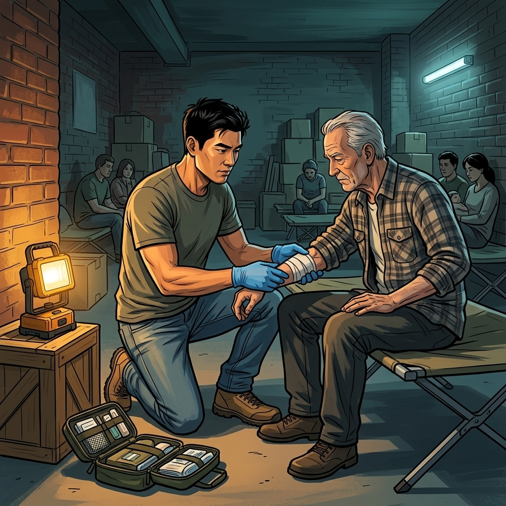
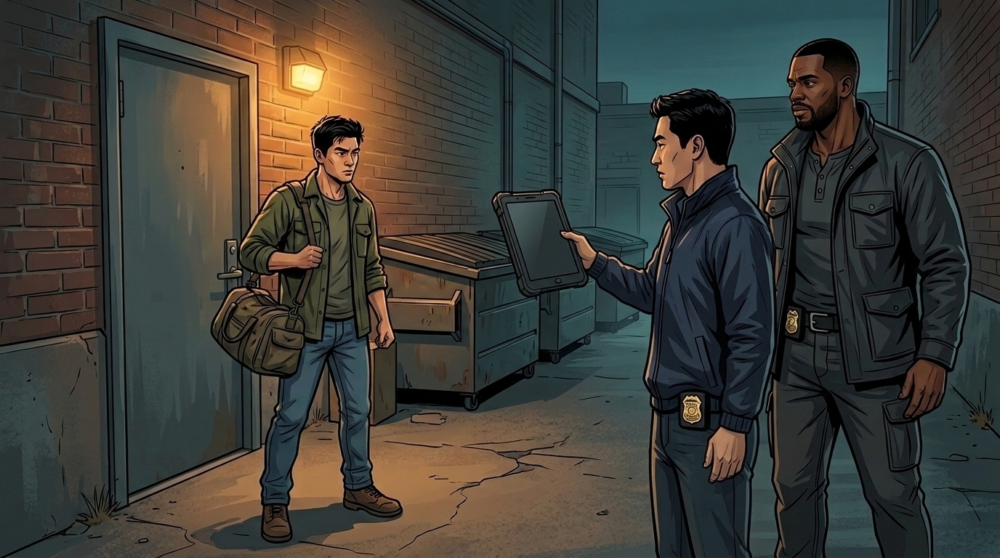

Episode 1: Cold Storage at St. Jude Annex (Arc 1 Starter)
CAUTIONGM Eyes Only (
GM_CONSPIRACY_SECRET): This scenario dossier contains starting NPC secrets, Dual-Psyche Social Combat wedges, and planned non-railroaded beats forawakened_ep1_st_jude_seed(config/campaign.toml,data/npcs/awakened_npcs.toml). Players should not read this file before sitting down at the table. Campaign Navigation: Campaign Summary · Prologue (Prequel) · Part IV: Episode 1: St. Jude Annex · Three-Arc Chronicle · Faction Conspiracies & Canon Threads
1. Arc 1 Tone, Premise & Core Questions
Tone & Premise: Grounded near-future noir, investigative forensics, and working-class survival in 2035 AD. Player characters begin on the margins of Satyang—or as displaced neighbors, clinic medics, fixers, ex-inspectors, and disillusioned technicians drawn into one local blackout before anyone uses the words "Blue Lotus" out loud.
2. Starter Scenario: Cold Storage at St. Jude Annex (awakened_ep1_st_jude_seed)

Setting Hook: A rain-swept evening at St. Jude Mutual-Aid Annex, a community medical and legal-aid clinic quietly connected to Satyang's community outreach network. Rolling brownouts, neighborhood grief over white-collar layoffs, and a nearby automated logistics depot create an immediate powder keg.
Starter Cast & 9-Trait Social Combat Wedges (data/npcs/awakened_npcs.toml)

Five Non-Railroaded Scenario Beats (config/campaign.toml)

- The Air-Gapped Drive: Bandajara requests
48-hour air-gapped sanctuary—forcing the party to vet whether he is sincere, compromised, or reckless. - Basement Draw & Picket Recruitment: Mei-Ling flags clinic basement power anomalies and Humanis Primaris recruitment among desperate clinic families.
- Alley Barter: Echo-9 opens a tight-beam RF barter channel from the adjacent utility alley—testing whether the party extends good faith (
TRS) to an un-clamped Rogue AI. - The Warrant at the Door: Agent Marcus Chen serves an administrative inspection warrant on the annex, escalating from social cross-examination toward tactical extraction if telemetry traces leak.
- Sabotage in the Dark: A Humanis Primaris sabotage strike knocks out the neighborhood
500 kV/ substation feed serving the autonomous courier depot—forcing the PCs to triage clinic lives, shield cold-storage racks off the grid, and choose allies under darkness.
3. Running Awakened at the Table (GM Craft & Mechanics)
Companion Guided Play Examples (docs/ttrpg-examples/)Want to see St. Jude Annex played out dice-by-dice with Mateo Vance, Linnea Cho, and Amara Okafor? Walk through Guide 02 (Service Alley Deadbolt), Guide 03 (Corridor Stealth &
OODA), Guide 04 (Agent Chen Social Combat), Guide 05 (Stairwell Melee), and Guide 06 (Parking-Deck Firefight & Triage).